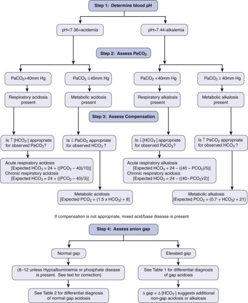
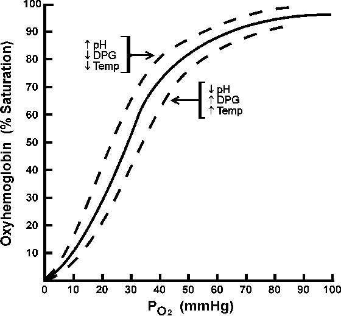

ABG
and Acid-Base Balance
Key Points:
- pH in tight range as proteins dependent on normal pH for binding
and enzymatic action
- Lungs and kidneys maintain homeostasis
- Acid - base buffering according to Henderson Hasselbach equation

Intro
Hypercapnia will kill; but hypoxia will kill quickly
- some COPD pts rely on low O2 for resp drive.
Oxygen
Dissociation Curve
Relationship of PaO2 to SaO2 is defined by O2 dissociation curve
- affected by temp, PaCO2, pH
- increased metabolism - heat, CO2 and acid - reduced affinity of O2
for Hb
--> more readily offloads into cells
- 2-3-DPG in cells further loosens these bonds; chronic.

Interpretation
pH 7.35-7.45
PaCO2 4.5-5.5
HCO3- 24-28
Base def/excess: +2 to -2 (buffer consumption; shows if
buffers consumed (deficit) or retained (excess))
Pa02 10-14 kPa
Lactate <1.2
Anion gap 10-15
- AG = (Na + K) - (Cl- + HCO3-)
- acidaemia with high anion gap shows unmeasured anions (ketones /
lactate)
- no anion gap typically hyperchloraemic acidaemia
Acid Base
Resp breathes off acid acutely
- kidney longer term excretion; impaired in renal disease
Buffered by bicarb relationship:
H+ + HCO3- <--> H2CO2 <-->
H20 + C02
Resp acidosis
Retention of CO2 -- increased H+ by driving eqn to the left
- renal response 48h to near compensation
--> Resp / ventilatory support, ?excess opiates, may need resp
consult, consider PE
Consider central drive, neuromuscular disease, thorax abnormality,
airway, lung abnormalities, increased CO2 production.
Metabolic Acidosis
Excess acid, pushing eqn to right, tachypnoea
--> Treat cause, e.g. MUDPILES (metformin, uremia, DKA,
paraledehyde, isoniazid, lactic acidosis, ethylene glycol,
salycilates)
Resp Alkalosis
Breathe off excess CO2, causes loss of H+ to compensate
- e.g. increased central resp drive due to liver disease, CNS
dysfunction, toxicity
Consider primary or secondary hyperventilation.
Metabolic Alkalosis
Increased bicarb in blood
- loss of acid (e.g. gastric outlet obstruction)
- abnormal retention of bicarb (loop diuretics, chronic
hypokalaemia)
GI losses of chloride
- vomiting, nasogastric suctions, diarrhoea
Renal dysfunction
- diuretic therapy, postcompensated hypercapnia, penicilin,
hypokalemia
Endocrine
- hyperaldosteronism, cushing syndrome, exogenous steroids,
refeeding
Increased base
- sodium bicard, sodium acetate (TPN), sodium citrate (massive
transfusion).
Anion Gap
In lactate acidosis, differential diagnosis based on the presence or
absence of an anion gap, difference between measured cations and
anions.
The gap represents the unmeasured anions (including negatively
charged proteins such as albumin, phosphates, and other weak acids.
Calculated by:
AG = Na+ - (Cl- + HCO3) (normal is 10 +/- 4)
mEq/L
An elevated anion gap indicates the addition of unmeasured anions,
including lactate and sulfates.
Gap acidosis
In critically ill, more likely to be:
- rhabdomylosys, uncoupled oxidative phosphorylation (e.g.
cyanide), propofol infusion syndrome, infection / sepsis,
epihephrine, short gut bacterial overgrowth.
Non-gap acidosis
Increased acid intake; e.g.
- Na+ chloride resuscitation, TPN, calcium or magnesium chloride
Loss of buffer, e.g.:
- GI losses, diarrhoea, drainage of pancreatic / biliary secretions,
renal loss, cholesyramine, uropathy / nephropathy, DM, NSAIDs,
Heparin
Base Excess
Simply the amount of base in the blood
Typical range is -2 to +2 mEq/L
High in metabolic alkalosis
- or compensatory respiratory acidosis;
- can be excessive vomiting of HCl in gastric juice; renal
overproduction of bicard.
Low in metabolic acidosis
- or compensation for primary respiraotry alkalosis
- diabetic or lactic acidosis produce base excess
- chronic renal failure (prevents acid excretion)
- diarrhoea; base bicarbonate lost
- ingestion of poisons